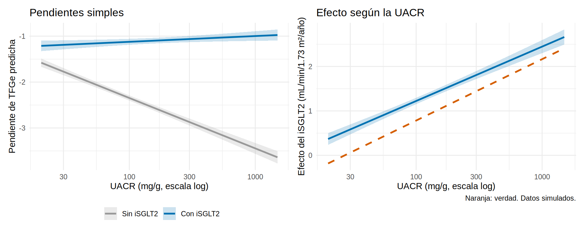
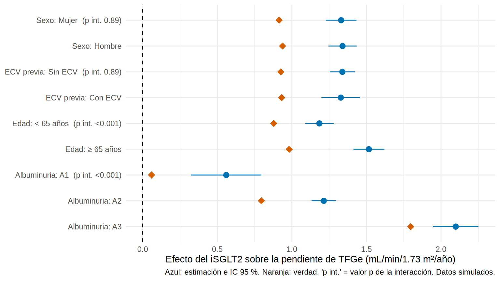

library(tidyverse)
library(broom)
library(marginaleffects)
library(boot)
source("R/funciones_epi.R")
source("R/funciones_extra_cap78.R")
oraculo <- read_csv("Bases/ckd_isglt2_oraculo.csv", show_col_types = FALSE) |>
mutate(sexo = factor(sexo, levels = c("Mujer", "Hombre")),
luacr = log(uacr), luacr_c = luacr - 4.8, cat_a = categoria_a(uacr))Interacción y modificación del efecto: ¿a quién beneficia más?
Nota🩺 Escenario
El servicio solo puede iniciar iSGLT2 a un número limitado de pacientes este trimestre. La jefa pregunta: “¿a quién trato primero?”. No pregunta si el fármaco funciona en promedio, sino si funciona más en unos pacientes que en otros: ¿en los que tienen más albuminuria?, ¿en los mayores?, ¿en los que tienen ECV? Esa es la pregunta de la modificación del efecto (o interacción).
Lo que vamos a hacer
- Distinguir confusión, mediación y modificación del efecto (y saber por qué la última no es un sesgo).
- Estimar y dibujar una interacción en un modelo lineal (pendientes simples) y compararla con la verdad.
- Ver por qué la interacción depende de la escala (aditiva o multiplicativa), calcular RERI/AP/SI y analizar subgrupos sin engañarnos.
Paso 1. Tres conceptos que se confunden
- Confusión: ¿otra variable distorsiona la relación exposición-desenlace? Es una molestia y se ajusta.
- Mediación: ¿parte del efecto pasa por otra variable? Se descompone (Cap. 18).
- Modificación del efecto (interacción): ¿el efecto de la exposición cambia según el nivel de otra variable? Aquí la otra variable es de interés y se estudia; no es un error que haya que corregir.
Una precisión útil (Knol y VanderWeele, 2012; Bours, 2021): hablamos de modificación del efecto cuando interesa el efecto de una exposición (el iSGLT2) y cómo varía entre los niveles de otro factor (la albuminuria), sin que nos planteemos intervenir sobre ese factor. Hablamos de interacción cuando interesa el efecto conjunto de dos exposiciones sobre las que se podría intervenir. La modificación del efecto es una propiedad del efecto causal: lo que hacemos es descubrir “en quién” funciona.
Preparamos los datos con el oráculo (contiene el efecto verdadero de cada paciente) y la UACR centrada en su valor típico: ln(UACR) = 4.8 (UACR ≈ 120 mg/g). Centrar permite que el coeficiente del tratamiento sea el efecto en un paciente “típico” y no “cuando ln(UACR) = 0” (UACR = 1 mg/g, que no existe).
Paso 2. La interacción en un modelo lineal
Para que el efecto del iSGLT2 dependa de la albuminuria, se incluye un producto entre ambas variables:
\[ E[Y] = \beta_0 + \beta_1\,\text{iSGLT2} + \beta_2\,\ln(\text{UACR}) + \beta_3\,(\text{iSGLT2} \times \ln\text{UACR}) + \dots \]
El efecto del iSGLT2 ya no es un número, sino \(\beta_1 + \beta_3 \ln(\text{UACR})\): cambia con la UACR. En R, a * b significa “a, b y su producto”.
m_int <- lm(pendiente_tfg ~ isglt2 * luacr_c + I(edad / 10) + sexo + hba1c + pas + tfg_basal + ecv,
data = oraculo)
tidy(m_int, conf.int = TRUE) |>
filter(str_detect(term, "isglt2")) |>
mutate(across(where(is.numeric), \(x) round(x, 3)))# A tibble: 2 × 7
term estimate std.error statistic p.value conf.low conf.high
<chr> <dbl> <dbl> <dbl> <dbl> <dbl> <dbl>
1 isglt2 1.33 0.036 36.8 0 1.26 1.40
2 isglt2:luacr_c 0.532 0.032 16.9 0 0.47 0.593Cómo se lee.
isglt2(1.33): el efecto del iSGLT2 cuando la UACR es la típica (ln = 4.8, ≈ 120 mg/g). Ya no es “el efecto” en general.isglt2:luacr_c(0.53): por cada aumento de 1 en ln(UACR) (la UACR se multiplica por 2.7), el beneficio aumenta en 0.53 mL/min/1.73 m²/año. Es el coeficiente de la interacción.- Los “efectos principales” de las variables que participan en una interacción ya no se interpretan por separado:
isglt2solo vale a un nivel concreto deluacr_c.
¿Es necesaria la interacción? Se compara el modelo con y sin ella con una prueba F (o de razón de verosimilitud en modelos no lineales):
m_sin <- update(m_int, . ~ . - isglt2:luacr_c)
anova(m_sin, m_int)Analysis of Variance Table
Model 1: pendiente_tfg ~ isglt2 + luacr_c + I(edad/10) + sexo + hba1c +
pas + tfg_basal + ecv
Model 2: pendiente_tfg ~ isglt2 * luacr_c + I(edad/10) + sexo + hba1c +
pas + tfg_basal + ecv
Res.Df RSS Df Sum of Sq F Pr(>F)
1 4991 7126.9
2 4990 6742.5 1 384.42 284.5 < 2.2e-16 ***
---
Signif. codes: 0 '***' 0.001 '**' 0.01 '*' 0.05 '.' 0.1 ' ' 1La interacción mejora el ajuste de forma contundente (F = 285, p < 0.001).
Paso 3. Dibujar la interacción
Una interacción se entiende viéndola. Las pendientes simples son las líneas de predicción de cada grupo (tratados y no tratados) a lo largo de la variable modificadora. A la derecha, la misma información como efecto (la diferencia entre ambas líneas) con la verdad (línea naranja: el simulador define el efecto como 0.9 + 0.6 × [ln(UACR) − 4.8]):
niveles_uacr <- exp(seq(log(20), log(1500), length.out = 50))
malla <- datagrid(model = m_int, luacr_c = log(niveles_uacr) - 4.8, isglt2 = 0:1)
pred <- predictions(m_int, newdata = malla) |> as_tibble() |>
mutate(uacr = exp(luacr_c + 4.8), trat = factor(isglt2, labels = c("Sin iSGLT2", "Con iSGLT2")))
efecto <- comparisons(m_int, variables = "isglt2", newdata = datagrid(model = m_int, luacr_c = log(niveles_uacr) - 4.8)) |>
as_tibble() |> mutate(uacr = exp(luacr_c + 4.8), verdad = 0.9 + 0.6 * luacr_c)
g1 <- ggplot(pred, aes(uacr, estimate, color = trat, fill = trat)) +
geom_ribbon(aes(ymin = conf.low, ymax = conf.high), alpha = 0.2, color = NA) +
geom_line(linewidth = 1) +
scale_x_log10(breaks = c(30, 100, 300, 1000)) +
scale_color_manual(values = c("#999999", "#0072B2"), name = NULL) +
scale_fill_manual(values = c("#999999", "#0072B2"), name = NULL) +
labs(x = "UACR (mg/g, escala log)", y = "Pendiente de TFGe predicha", title = "Pendientes simples") +
theme_minimal(base_size = 11) + theme(legend.position = "bottom")
g2 <- ggplot(efecto, aes(uacr, estimate)) +
geom_ribbon(aes(ymin = conf.low, ymax = conf.high), alpha = 0.2, fill = "#0072B2") +
geom_line(color = "#0072B2", linewidth = 1) +
geom_line(aes(y = verdad), color = "#D55E00", linewidth = 1, linetype = "dashed") +
scale_x_log10(breaks = c(30, 100, 300, 1000)) +
labs(x = "UACR (mg/g, escala log)", y = "Efecto del iSGLT2 (mL/min/1.73 m²/año)", title = "Efecto según la UACR",
caption = "Naranja: verdad. Datos simulados.") +
theme_minimal(base_size = 11)
library(patchwork)
g1 + g2
Qué vemos. A la izquierda, las dos líneas se separan a medida que sube la UACR: si no hubiera interacción serían paralelas. A la derecha, el efecto del iSGLT2 crece con la albuminuria: pequeño con UACR baja (~0.4 con 30 mg/g) y de más de 2 mL/min/1.73 m²/año con UACR alta. La curva estimada tiene la forma correcta (casi paralela a la verdadera) pero queda por encima de ella en todos los niveles: es la misma confusión residual por fragilidad del 8.2.
En clínica interesa el efecto en cada categoría (A1, A2, A3). avg_comparisons() con by lo calcula a partir del mismo modelo, y lo comparamos con la verdad:
est <- avg_comparisons(m_int, variables = "isglt2", by = "cat_a") |>
as_tibble() |> select(cat_a, estimate, conf.low, conf.high)
verdad <- oraculo |> group_by(cat_a) |> summarise(verdadero = mean(ite), n = n())
left_join(est, verdad, by = "cat_a") |> mutate(across(where(is.numeric), \(x) round(x, 2)))# A tibble: 3 × 6
cat_a estimate conf.low conf.high verdadero n
<ord> <dbl> <dbl> <dbl> <dbl> <dbl>
1 A1 0.31 0.17 0.45 0.06 465
2 A2 1.23 1.16 1.3 0.8 3536
3 A3 2.12 2.01 2.24 1.8 999El modelo recupera el patrón (casi nulo en A1, intermedio en A2, grande en A3) pero sobrestima el nivel en cada grupo por 0.3-0.4 mL/min/1.73 m²/año. La forma de la heterogeneidad se aprende bien aunque el nivel esté sesgado.
Paso 4. Interacción en desenlaces binarios: ¿en qué escala?
Para un desenlace binario, “hay interacción” depende de la escala en que midas el efecto:
- Multiplicativa: el efecto relativo (RR u OR) cambia entre estratos.
- Aditiva: el efecto absoluto (diferencia de riesgos) cambia entre estratos.
Pueden no coincidir. Un efecto relativo constante (RR = 0.7 en todos) implica diferencias de riesgo distintas si el riesgo basal varía. Eso ocurre en nuestros datos: el HR del iSGLT2 es constante (0.70) para todos, pero el riesgo basal de evento crece con la albuminuria.
l_int <- glm(evento ~ isglt2 * cat_a + I(edad / 10) + sexo + hba1c + pas + tfg_basal + luacr + ecv,
data = oraculo, family = binomial)
l_sin <- update(l_int, . ~ . - isglt2:cat_a)
## ¿Hay interacción multiplicativa? (prueba de razón de verosimilitud)
anova(l_sin, l_int, test = "LRT")Analysis of Deviance Table
Model 1: evento ~ isglt2 + cat_a + I(edad/10) + sexo + hba1c + pas + tfg_basal +
luacr + ecv
Model 2: evento ~ isglt2 * cat_a + I(edad/10) + sexo + hba1c + pas + tfg_basal +
luacr + ecv
Resid. Df Resid. Dev Df Deviance Pr(>Chi)
1 4989 3877.2
2 4987 3876.6 2 0.59652 0.7421No hay evidencia de interacción multiplicativa (p = 0.74). Pero en escala absoluta el beneficio es muy distinto:
dr_grupo <- avg_comparisons(l_int, variables = "isglt2", by = "cat_a", comparison = "difference") |>
as_tibble() |> select(cat_a, DR = estimate, DR_inf = conf.low, DR_sup = conf.high)
rr_grupo <- avg_comparisons(l_int, variables = "isglt2", by = "cat_a", comparison = "ratio") |>
as_tibble() |> select(cat_a, RR = estimate)
dr_verdad <- oraculo |> group_by(cat_a) |> summarise(DR_verdad = mean(evento_36m_1 - evento_36m_0))
left_join(dr_grupo, rr_grupo, by = "cat_a") |>
left_join(dr_verdad, by = "cat_a") |>
mutate(NNT = 1 / abs(DR), across(where(is.numeric), \(x) round(x, 3)))# A tibble: 3 × 7
cat_a DR DR_inf DR_sup RR DR_verdad NNT
<ord> <dbl> <dbl> <dbl> <dbl> <dbl> <dbl>
1 A1 -0.046 -0.084 -0.008 0.347 -0.024 21.8
2 A2 -0.073 -0.096 -0.05 0.576 -0.042 13.6
3 A3 -0.113 -0.167 -0.058 0.627 -0.066 8.87En escala relativa, la heterogeneidad es leve y poco precisa (el RR de A1 se basa en pocos pacientes y su IC es amplio; la prueba de interacción da p alto). En escala absoluta, la diferencia de riesgos y el NNT cambian mucho: tratar a un paciente A3 evita bastantes más eventos que tratar a uno A1 (NNT de 9 frente a 22). Esa es la modificación del efecto en escala aditiva, y es la que importa para decidir a quién tratar con recursos limitados.
Las DR estimadas están infladas respecto de la verdad (DR_verdad: -2.4, -4.2, -6.6 puntos) por la confusión residual de siempre, pero el gradiente (más beneficio absoluto con más albuminuria) se conserva.
¿Qué escala reportar? Reporta ambas: la ausencia de interacción en una escala no implica ausencia en la otra. Si la decisión clínica depende del beneficio absoluto (NNT, eventos evitados), la escala aditiva es la relevante; la multiplicativa es la natural de los modelos logístico y de Cox y sirve para probar la interacción estadística.
Paso 5. Interacción aditiva entre dos factores: RERI, AP y SI
Cuando se estudian dos factores de riesgo (A y B), hay tres medidas de interacción en escala aditiva, todas calculadas a partir de los RR conjuntos respecto de una única categoría de referencia (la de menor riesgo):
- RERI (relative excess risk due to interaction) = RR₁₁ − RR₁₀ − RR₀₁ + 1. Si no hay interacción aditiva, RERI = 0; RERI > 0 indica un efecto conjunto mayor que la suma de los efectos separados.
- AP (proporción atribuible a la interacción) = RERI / RR₁₁: qué fracción del riesgo en los doblemente expuestos se debe a la interacción.
- SI (índice de sinergia) = (RR₁₁ − 1) / [(RR₁₀ − 1) + (RR₀₁ − 1)]. Sin interacción aditiva, SI = 1.
Para que ambos factores sean “de riesgo” recodificamos “no recibir iSGLT2” y lo combinamos con la ECV previa. La función interaccion_aditiva() (en R/funciones_extra_cap78.R) ajusta el modelo y devuelve todo; el IC se obtiene por bootstrap (Cap. 7.4) porque estas medidas no tienen una fórmula simple:
oraculo <- oraculo |> mutate(sin_isglt2 = 1 - isglt2)
covar <- c("I(edad / 10)", "sexo", "hba1c", "pas", "tfg_basal", "luacr")
set.seed(8)
b_int <- boot(oraculo, interaccion_aditiva, R = 500, desenlace = "evento",
a = "sin_isglt2", b = "ecv", covariables = covar)
tabla_int <- tibble(medida = names(b_int$t0), estimado = b_int$t0,
ic_inf = map_dbl(seq_along(b_int$t0), \(k) boot.ci(b_int, type = "perc", index = k)$percent[4]),
ic_sup = map_dbl(seq_along(b_int$t0), \(k) boot.ci(b_int, type = "perc", index = k)$percent[5]))
tabla_int |> mutate(across(where(is.numeric), \(x) round(x, 2)))# A tibble: 8 × 4
medida estimado ic_inf ic_sup
<chr> <dbl> <dbl> <dbl>
1 RR10 1.77 1.47 2.13
2 RR01 1.48 1.16 1.84
3 RR11 2.38 1.93 2.86
4 RERI 0.14 -0.3 0.53
5 AP 0.06 -0.14 0.22
6 SI 1.11 0.79 1.65
7 razon_multiplicativa 0.91 0.7 1.2
8 RR_a_dentro_de_b1 1.61 1.3 2 Cómo se lee. Frente a la referencia (tener iSGLT2 y no tener ECV): no recibir iSGLT2 multiplica el riesgo por 1.77; tener ECV, por 1.48; tener ambos, por 2.38. La suma de los efectos individuales (1.77 − 1 + 1.48 − 1 = 1.25) daría un RR conjunto de 2.25: el observado (2.38) es algo mayor, y el RERI = 0.14 (IC -0.30 a 0.53) incluye 0: no hay interacción aditiva detectable. El AP y el SI cuentan la misma historia (SI ≈ 1), y el cociente de RR (razon_multiplicativa ≈ 0.91) es la medida de interacción en escala multiplicativa: tampoco hay evidencia.
Con el paquete interactionR (no se ejecuta aquí) se obtienen estas medidas con IC por el método delta o MOVER, listas para publicar:
# Con el paquete interactionR (no se ejecuta aquí): RERI, AP y SI con IC delta o MOVER
library(interactionR)
m_ia <- glm(evento ~ sin_isglt2 * ecv + I(edad / 10) + sexo + hba1c + pas + tfg_basal + luacr,
data = oraculo, family = binomial) # logística: el paquete admite OR como aproximación de RR
tabla_ia <- interactionR(m_ia, exposure_names = c("sin_isglt2", "ecv"),
ci.type = "mover", ci.level = 0.95, em = FALSE, recode = FALSE)
interactionR_table(tabla_ia) # tabla lista para Word
Tip💡 Cómo presentar una interacción (Knol y VanderWeele, 2012)
Cuatro piezas de información bastan para que el lector juzgue: (1) el RR (o OR, o DR) de cada combinación de exposiciones con una sola categoría de referencia (la de menor riesgo); (2) el efecto de cada exposición dentro de los estratos de la otra; (3) las medidas de interacción en ambas escalas (RERI, AP, SI y el cociente de RR), con IC; y (4) la lista de confusores ajustados.
Paso 6. Análisis de subgrupos: lo que se debe y no se debe hacer
Si estudias varios modificadores, el gráfico de bosque (forest plot) es la mejor forma de presentarlos: el efecto en cada subgrupo, en la misma escala, con el valor p de la interacción y, aquí, con la verdad (rombos naranjas):
dat <- oraculo |>
mutate(ecv_f = factor(ecv, labels = c("Sin ECV", "Con ECV")),
edad65 = factor(if_else(edad >= 65, "≥ 65 años", "< 65 años"), levels = c("< 65 años", "≥ 65 años")))
subgrupo <- function(v, nombre) {
m <- lm(reformulate(c(paste0("isglt2 * ", v), "I(edad / 10)", "sexo", "hba1c", "pas", "tfg_basal", "luacr", "ecv"),
"pendiente_tfg"), data = dat)
p_int <- anova(update(m, as.formula(paste0(". ~ . - isglt2:", v))), m)$`Pr(>F)`[2]
avg_comparisons(m, variables = "isglt2", by = v) |> as_tibble() |>
transmute(modificador = nombre, nivel = as.character(.data[[v]]), est = estimate, inf = conf.low, sup = conf.high,
p_int = p_int) |>
left_join(dat |> group_by(nivel = as.character(.data[[v]])) |> summarise(verdad = mean(ite)), by = "nivel")
}
sub <- bind_rows(subgrupo("sexo", "Sexo"), subgrupo("ecv_f", "ECV previa"),
subgrupo("edad65", "Edad"), subgrupo("cat_a", "Albuminuria")) |>
mutate(etiqueta = paste0(modificador, ": ", nivel,
if_else(duplicated(modificador), "", paste0(" (p int. ", format.pval(p_int, digits = 2, eps = 0.001), ")"))),
etiqueta = fct_inorder(etiqueta) |> fct_rev())
ggplot(sub, aes(est, etiqueta, xmin = inf, xmax = sup)) +
geom_vline(xintercept = 0, linetype = "dashed") +
geom_pointrange(color = "#0072B2") +
geom_point(aes(x = verdad), shape = 18, size = 3.5, color = "#D55E00") +
labs(x = "Efecto del iSGLT2 sobre la pendiente de TFGe (mL/min/1.73 m²/año)", y = NULL,
caption = "Azul: estimación e IC 95 %. Naranja: verdad. 'p int.' = valor p de la interacción. Datos simulados.") +
theme_minimal(base_size = 11)
Qué vemos. Sexo y ECV no modifican el efecto (p de interacción alto, y la verdad también es igual en ambos niveles). La albuminuria sí lo modifica y de forma importante (la verdad pasa de ~0.1 en A1 a ~1.8 en A3). La edad es la lección: su p de interacción es pequeño, pero el efecto verdadero apenas cambia entre < 65 y ≥ 65 años (0.88 frente a 0.98). Con 5 000 pacientes y confusión residual (la fragilidad crece con la edad), el modelo “ve” una interacción exagerada. Significativo no es importante, y estimado no es causal.
Advertencia⚠️ Cinco errores frecuentes con los subgrupos
- Comparar valores p entre subgrupos (“significativo en hombres, no en mujeres”). El método correcto es probar la interacción.
- Hacer muchos subgrupos sin plan previo: con 10 subgrupos hay un 40 % de probabilidad de al menos un falso positivo.
- Subgrupos sin potencia: el estudio se calculó para el efecto global; “sin efecto” puede significar “sin potencia”.
- Dicotomizar una variable continua (UACR < 300 frente a ≥ 300) pierde información; es mejor la interacción con la variable continua.
- Interpretar causalmente la interacción sin recordar que la variable modificadora también necesita control de confusión. Si el subgrupo no estaba planeado, etiqueta el análisis como exploratorio.
Importante🎯 En resumen
- Confusión = se ajusta; modificación del efecto = se estudia; mediación = se descompone. La modificación del efecto no es un sesgo: es información sobre en quién funciona un tratamiento.
- La interacción se modela con términos producto (centra la variable continua) y se entiende mejor dibujándola (pendientes simples).
- Para decidir a quién tratar importa la escala aditiva (DR, NNT, RERI); para probar, la multiplicativa. Reporta ambas. Un RR constante genera DR distinta si el riesgo basal varía.
- Prueba la interacción; nunca compares p entre subgrupos. Una interacción “significativa” puede ser confusión residual disfrazada.
Ejercicio
- Estima la interacción entre iSGLT2 y sexo en la pendiente de TFGe. ¿Existe modificación del efecto?
- Calcula el NNT a 36 meses por categoría de albuminuria con la DR estandarizada de cada grupo. ¿En qué grupo es menor?
- Cambia
cat_aporluacr(continua) en la interacción del modelo binario. ¿Cómo cambia el efecto estimado (RR o DR) al aumentar la UACR?